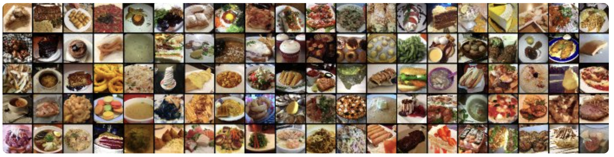

Project Goal:
This project fine tunes a Tiny Swin transformer to classify images from the Food101 dataset. This dataset consists of 101 food categories with 750 training and 250 test images per category, summing up to a total of 101,000 images. The training images are not cleaned, and thus still contain some amount of noise.
Key Literature:
- Swin Transformer: Hierarchical Vision Transformer using Shifted Windows, Microsoft Research Asia 2021
- - “To address these differences, we propose a hierarchical Transformer whose representation is computed with Shifted windows.”
- Food-101 – Mining Discriminative Components with Random Forests 2014
- - “We introduce a novel and challenging dataset of 101 food categories, with 101,000 images.”
Modeling Approach:
I fine-tuned Microsoft's pretrained Tiny Swin model using pytorch API. I used a Swin Transformer due to its ability to effectively capture both local and global features while maintaining computational efficiency. Unlike traditional CNNs, which use fixed receptive fields, Swin Transformers leverage a hierarchical architecture with shifted windows, allowing them to process images with greater flexibility and efficiency.
Results:
- Test Accuracy: 81.43%
- F1 score: 81%
Highlighted Code Sections:
import pandas as pd
import numpy as np
import os
from sklearn.model_selection import train_test_split
import torchvision
from torchvision.transforms import ToTensor
import torchvision.transforms as transforms
from torchvision.datasets import Food101
from torch.utils.data import DataLoader
import torch.optim as optim
#to split validate from train
from torch.utils.data import random_split
import torchvision.datasets as datasets
from transformers.modeling_outputs import SequenceClassifierOutput
import torch.nn as nn
import torch.nn.functional as F
from transformers import AutoImageProcessor, SwinModel, SwinBackbone
import matplotlib.pyplot as plt
from sklearn.metrics import precision_score, recall_score, f1_score, confusion_matrix
class Food101Classifier(nn.Module):
def __init__(self, num_classes=101):
super(Food101Classifier, self).__init__()
self.backbone = SwinBackbone.from_pretrained("microsoft/swin-tiny-patch4-window7-224")
# Run a dummy forward pass to determine feature size
dummy_input = torch.randn(1, 3, 224, 224)
with torch.no_grad():
features = self.backbone(dummy_input)
# Extract the last feature map and apply adaptive pooling
feature_tensor = features.feature_maps[-1]
feature_dim = feature_tensor.shape[1] # Extract channel dimension
self.global_pool = nn.AdaptiveAvgPool2d(1) # Pool to (batch_size, C, 1, 1)
self.classifier = nn.Linear(feature_dim, num_classes)
def forward(self, x):
features = self.backbone(x)
features = features.feature_maps[-1] # Extract the last feature map
features = self.global_pool(features) # Adaptive pooling to (batch_size, C, 1, 1)
features = torch.flatten(features, 1) # Flatten to (batch_size, C)
return self.classifier(features)
# Device setup
device = torch.device("cuda" if torch.cuda.is_available() else "cpu")
model = Food101Classifier().to(device)
# Loss and optimizer
criterion = nn.CrossEntropyLoss()
optimizer = optim.AdamW(model.parameters(), lr=1e-4, weight_decay=1e-2)
def train(model, dataloader, criterion, optimizer, epochs=5, print_freq=10):
model.train()
for epoch in range(epochs):
running_loss = 0.0
for batch_idx, (images, labels) in enumerate(dataloader):
images, labels = images.to(device), labels.to(device)
optimizer.zero_grad()
outputs = model(images)
loss = criterion(outputs, labels)
loss.backward()
optimizer.step()
running_loss += loss.item()
# Print progress every few batches
if (batch_idx + 1) % print_freq == 0:
print(f"Epoch [{epoch+1}/{epochs}], Step [{batch_idx+1}/{len(dataloader)}], Loss: {loss.item():.4f}")
print(f"Epoch {epoch+1}/{epochs}, Avg Loss: {running_loss/len(dataloader):.4f}")
# Evaluation function
def test(model, dataloader):
model.eval()
correct, total = 0, 0
with torch.no_grad():
for images, labels in dataloader:
images, labels = images.to(device), labels.to(device)
outputs = model(images)
_, predicted = torch.max(outputs, 1)
total += labels.size(0)
correct += (predicted == labels).sum().item()
print(f"Test Accuracy: {100 * correct / total:.2f}%")
# Train and evaluate
train(model, train_loader, criterion, optimizer, epochs=5)
test(model, test_loader)